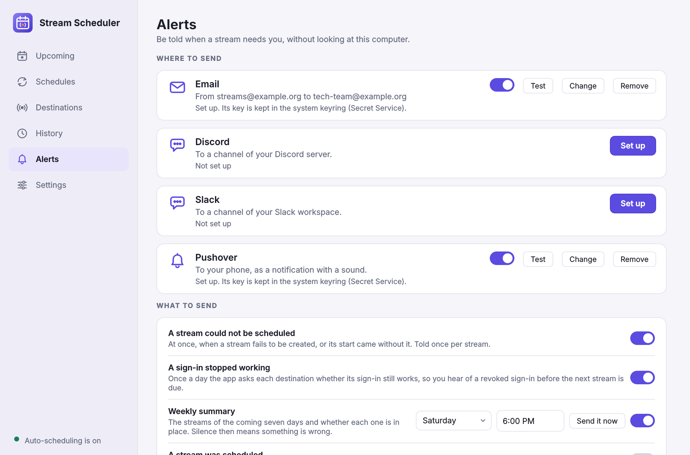

Your weekly live streams, scheduled by themselves
Stream Scheduler is a free app that creates your scheduled live streams on YouTube each week, with the date of each stream already in the title, and shows the coming stream on your website.
Free, for Windows, Mac and Linux. No account with us, nothing to pay. Privacy policy
You write the title once
Sunday Service - {date}
- Sunday Service - November 15, 2027 Sun 8:00 AMOn YouTube
- Sunday Service - November 22, 2027 Sun 8:00 AMWill be created Sat 9:00 AM
- Sunday Service - November 29, 2027 Sun 8:00 AMWill be created Sat 9:00 AM

How it works
Set it up once
After that, nobody has to remember to create Sunday's stream on Saturday night.
Connect your channel
A guide takes you through signing in to YouTube on Google's own page, one step at a time.
Say when you stream
For example every Sunday at 8:00 AM, created the Saturday before at 9:00 AM.
The app creates each stream
At that time your computer makes the scheduled live stream on your channel, with the date filled in.
Your website follows
A page of your Wix or WordPress site is pointed at the new stream, and you are told if anything failed.
Features
What it does for you
Made for one job, the stream that comes back every week, and for the volunteers who look after it.
Schedules that repeat
Every week on the days you choose, and you decide for each schedule which of your destinations it goes to.
Titles that fill in the date
{date}, {weekday}, {month}, {day}, {year} and
{time}, in the title and the description, with a choice of date formats.
One-time streams and series
A single date, such as Christmas Eve, or a first and a last date, such as Wednesdays in Lent. The app writes “Lent, week 2” by itself.
Change one stream
Give a single date another title, time or thumbnail, or skip it, without touching the schedule. A stream that already exists is changed on YouTube too.
Thumbnails and YouTube settings
A thumbnail per schedule; who can watch, the playlist, the category, the delay and the stream key per channel.
Preview before it is sent
See the title, description, time and every setting of the next streams, without sending anything.
Alerts when a stream needs you
By email, Discord, Slack or Pushover when a stream could not be scheduled or a sign-in stopped working, with an optional weekly summary.
Check and repair
One click sees whether every scheduled stream is still on YouTube and on your website, and puts back what is missing.
Runs quietly
Stays in the tray, can start when you log in, and catches up on what it missed while the computer was off. Light and dark themes.
Your schedule
Say it once, in plain words
A schedule is one small window. The preview at the bottom shows the next stream exactly as it will be created.
- When you stream: the days of the week and the time.
- When it is created: how many days before, and at what hour.
- What it is called: a title and description that fill in the date.
- Where it goes: your YouTube channel, and your website if you like.


Guided setup
A guide for every connection
Connecting YouTube, a Wix or WordPress website, a webhook or an alert takes 10 to 15 minutes, once. Each guide explains what to click on the other side, and what each step means for the safety of your account.
Alerts
Hear about it before Sunday
The app tells you when a stream could not be scheduled or a sign-in stopped working, so there is time to put it right.
- Where: email, Discord, Slack or Pushover.
- Weekly summary: the streams of the coming seven days and whether each is in place.
- Silence means something: no summary means the app is not running.

Your data
No server, no account with us
Stream Scheduler runs on your own computer and talks directly to YouTube and to your website. When you connect a channel, you sign in on Google's own page and allow the app to manage your YouTube account. It uses that only to read your channel's name and stream keys' names, and to create the scheduled live streams of your schedules through YouTube's official API.
Your sign-ins are kept in your system's keychain, never in a file. Leaven Labs receives nothing.
Download Stream Scheduler
Free for anyone. This is an early (alpha) version: YouTube scheduling and the Wix website update are confirmed on a real channel and site; the release notes say what is still being tested. The streams are created by your computer, so it has to be on at the time you chose, or it catches up when it next runs.
Stream-Scheduler-Windows-Setup.exe
MacApple silicon (M1 or newer)Stream-Scheduler-macOS.zip
Linux64-bit, Ubuntu 22.04 or newerStream-Scheduler-Linux-x86_64.tar.gz
The downloads are not code-signed yet, so Windows and macOS ask you to confirm the first time. The install guide shows what to click.